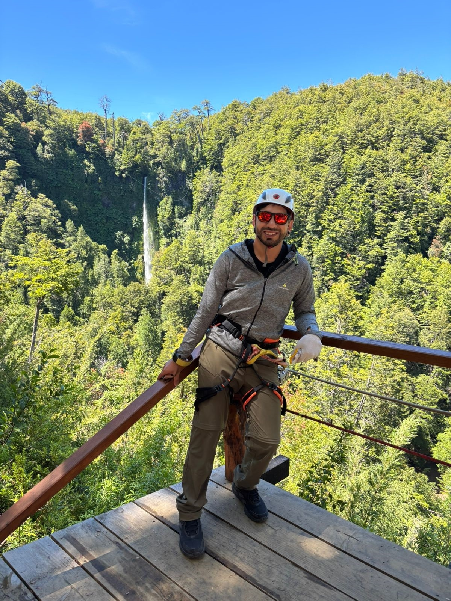

Agustin Cabañez
Desarrollador de Software | Logística Industrial
Experiencia
- Área industrial y maquinaria.
- Operador de autoelevadores.
- Sistemas en Trf.
- Sistema ERP INCUYO.
Formación
Secundario: Escuela Secundaria N° 1 4-172 PUERTO ARGENTINO
Titulo
Terciario: Desarrollo de Software
Titulo intermedio:
Programador junior
Desarrollador full Stack Junior
Instituto Nuevo Cuyo (INCUYO)